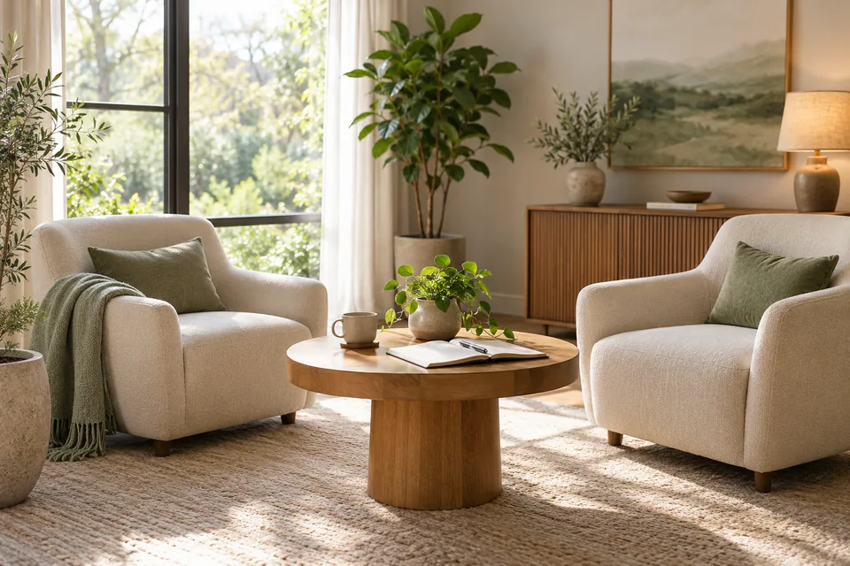
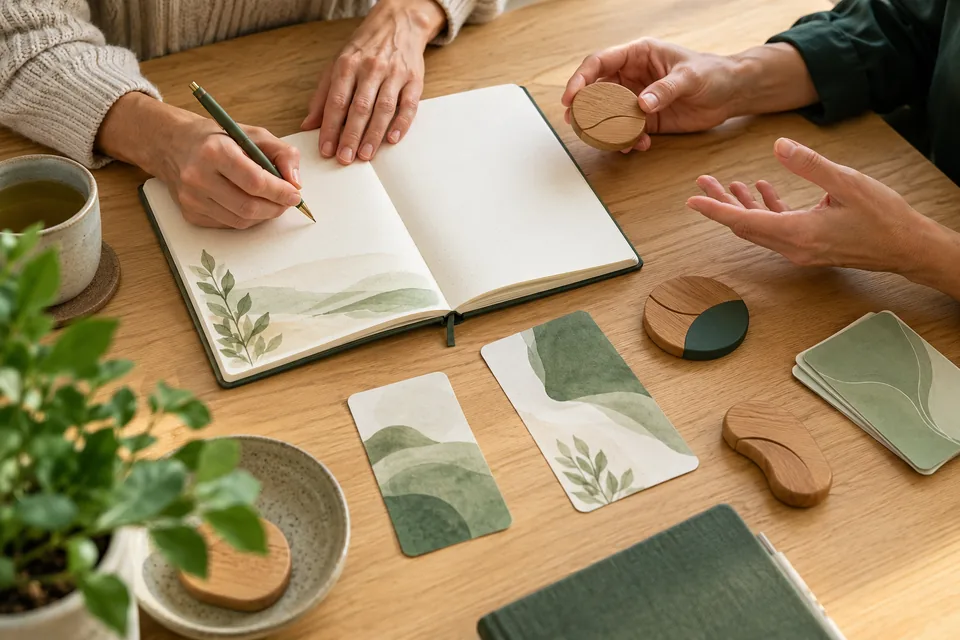
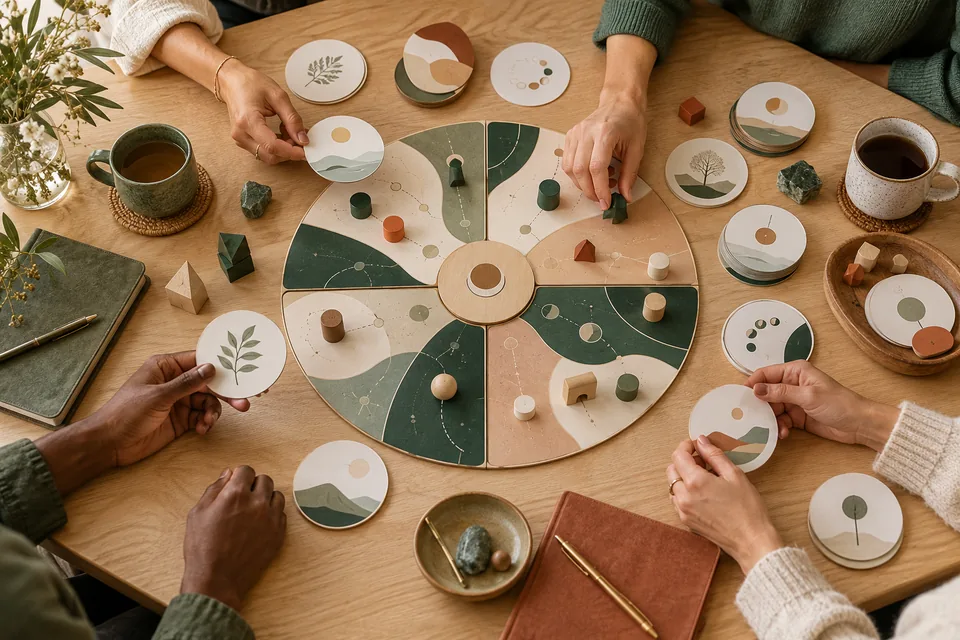
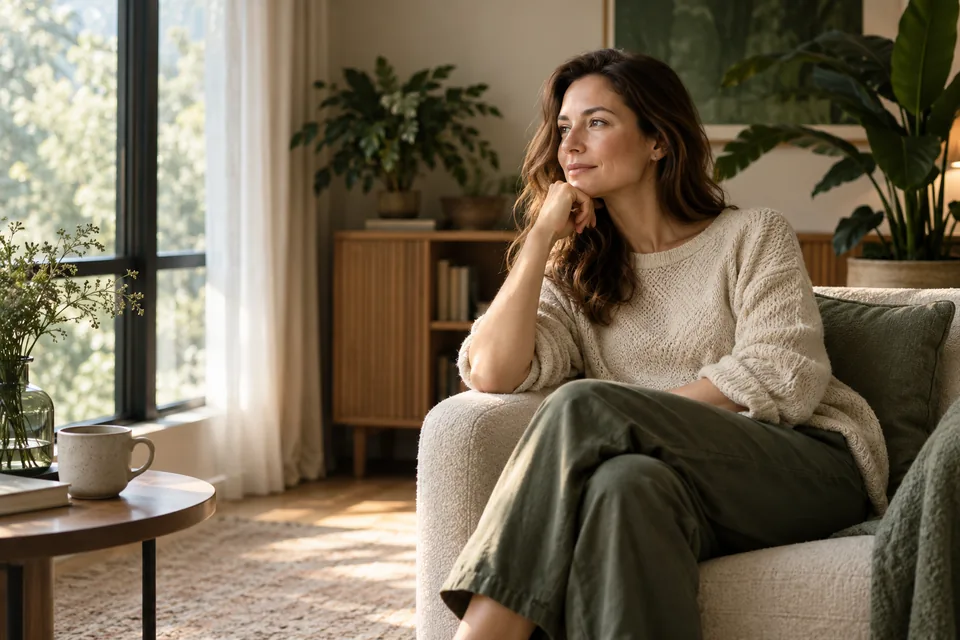

01
Рішення
- Постійно відкладаю важливі рішення
- Залежу від думки інших і сумніваюся у власних рішеннях
Нейропсихологічні практики · Торонто та онлайн
Допомагаю побачити, що саме стримує вас, знайти власні відповіді та перейти від нескінченного аналізу до конкретних рішень у грошах, реалізації, стосунках і самооцінці.
Індивідуально · онлайн та офлайн у Торонто
Коли знань недостатньо
Ви можете усвідомлювати свої бажання та цілі, але продовжувати повторювати звичні реакції та поведінкові сценарії.
Розуміння проблеми — важливий початок, проте для змін потрібні нові дії та практики.
Не зупинятися на аналізі. А почати діяти по-новому.
Можливо, ви впізнали себе
Три сфери, де старі сценарії найчастіше стають помітними.
Я не вирішую за вас і не нав’язую «правильну» відповідь. За допомогою практик ви досліджуєте свій запит, краще розумієте власні реакції та знаходите рішення, які можете застосовувати у реальному житті.
Не готова відповідь, а власний орієнтир.
побачити, що саме вас стримує
обрати власний наступний крок без тиску
мати інструменти для самостійної роботи

Особистий простір для розбору ситуації, причин і наступних кроків.
Дізнатися більше
Практична робота з моделями мислення, реакціями та внутрішніми обмеженнями.
Дізнатися більше
Дослідження запиту через структурований ігровий формат.
Дізнатися більшеУ розробці
Нові напрями готуються. Деталі та дати оголосимо окремо.
Як проходить робота
Від розуміння ситуації — до практики, якою ви можете користуватися самостійно.
Визначаємо ситуацію
Досліджуємо, що підтримує сценарій
Отримуєте практику для свого запиту
Користуєтесь інструментом самостійно
Не обов’язково одразу мати точне формулювання. Почнімо з того, що зараз турбує.

Для мене важливо берегти час людини та не створювати залежності від спеціаліста. Моє завдання — допомогти вам побачити суть запиту й освоїти інструмент, яким ви зможете користуватися самостійно.
Робочі методики отримані в межах професійного навчання та спеціалізованих програм.
Індивідуальні консультації — особистий простір для розбору ситуації, причин і наступних кроків. Сесії з нейропроцесів — практична робота з моделями мислення, реакціями та внутрішніми обмеженнями.
Формат і тривалість залежать від запиту.
Так, можна працювати онлайн. Також доступні офлайн-зустрічі у Торонто.
Делікатний формат для дітей і підлітків від 8 років. Умови роботи та участь батьків уточнюються індивідуально.
Ні. Практики не замінюють медичну допомогу або психотерапію.
Індивідуальна консультація
Напишіть мені — разом визначимо, який формат роботи підійде для вашої ситуації
Написати в TelegramОнлайн та офлайн у Торонто